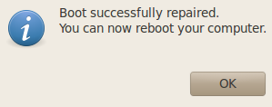
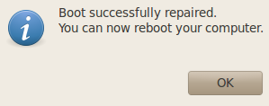

다른 정보들이 더 출력이 되긴 하지만, 간단히 다음과 같은 명령어를 입력하면 된다. (-x 다음 인자에 c/c++ 입력)
echo | gcc -v -x c -E -
echo | gcc -v -x c++ -E -
Ubuntu 14.04에서 테스트 결과는 다음과 같다
Using built-in specs.
COLLECT_GCC=gcc
Target: x86_64-linux-gnu
Configured with: ../src/configure -v --with-pkgversion='Ubuntu 4.8.4-2ubuntu1~14.04.1' --with-bugurl=file:///usr/share/doc/gcc-4.8/README.Bugs --enable-languages=c,c++,java,go,d,fortran,objc,obj-c++ --prefix=/usr --program-suffix=-4.8 --enable-shared --enable-linker-build-id --libexecdir=/usr/lib --without-included-gettext --enable-threads=posix --with-gxx-include-dir=/usr/include/c++/4.8 --libdir=/usr/lib --enable-nls --with-sysroot=/ --enable-clocale=gnu --enable-libstdcxx-debug --enable-libstdcxx-time=yes --enable-gnu-unique-object --disable-libmudflap --enable-plugin --with-system-zlib --disable-browser-plugin --enable-java-awt=gtk --enable-gtk-cairo --with-java-home=/usr/lib/jvm/java-1.5.0-gcj-4.8-amd64/jre --enable-java-home --with-jvm-root-dir=/usr/lib/jvm/java-1.5.0-gcj-4.8-amd64 --with-jvm-jar-dir=/usr/lib/jvm-exports/java-1.5.0-gcj-4.8-amd64 --with-arch-directory=amd64 --with-ecj-jar=/usr/share/java/eclipse-ecj.jar --enable-objc-gc --enable-multiarch --disable-werror --with-arch-32=i686 --with-abi=m64 --with-multilib-list=m32,m64,mx32 --with-tune=generic --enable-checking=release --build=x86_64-linux-gnu --host=x86_64-linux-gnu --target=x86_64-linux-gnu
Thread model: posix
gcc version 4.8.4 (Ubuntu 4.8.4-2ubuntu1~14.04.1)
COLLECT_GCC_OPTIONS='-v' '-E' '-mtune=generic' '-march=x86-64'
/usr/lib/gcc/x86_64-linux-gnu/4.8/cc1 -E -quiet -v -imultiarch x86_64-linux-gnu - -mtune=generic -march=x86-64 -fstack-protector -Wformat -Wformat-security
ignoring nonexistent directory "/usr/local/include/x86_64-linux-gnu"
ignoring nonexistent directory "/usr/lib/gcc/x86_64-linux-gnu/4.8/../../../../x86_64-linux-gnu/include"
#include "..." search starts here:
#include <...> search starts here:
/usr/lib/gcc/x86_64-linux-gnu/4.8/include
/usr/local/include
/usr/lib/gcc/x86_64-linux-gnu/4.8/include-fixed
/usr/include/x86_64-linux-gnu
/usr/include
End of search list.
# 1 "<stdin>"
# 1 "<built-in>"
# 1 "<command-line>"
# 1 "/usr/include/stdc-predef.h" 1 3 4
# 1 "<command-line>" 2
# 1 "<stdin>"
COMPILER_PATH=/usr/lib/gcc/x86_64-linux-gnu/4.8/:/usr/lib/gcc/x86_64-linux-gnu/4.8/:/usr/lib/gcc/x86_64-linux-gnu/:/usr/lib/gcc/x86_64-linux-gnu/4.8/:/usr/lib/gcc/x86_64-linux-gnu/
LIBRARY_PATH=/usr/lib/gcc/x86_64-linux-gnu/4.8/:/usr/lib/gcc/x86_64-linux-gnu/4.8/../../../x86_64-linux-gnu/:/usr/lib/gcc/x86_64-linux-gnu/4.8/../../../../lib/:/lib/x86_64-linux-gnu/:/lib/../lib/:/usr/lib/x86_64-linux-gnu/:/usr/lib/../lib/:/usr/lib/gcc/x86_64-linux-gnu/4.8/../../../:/lib/:/usr/lib/
COLLECT_GCC_OPTIONS='-v' '-E' '-mtune=generic' '-march=x86-64'
위 결과 중에서 다음 부분이 기본 include path가 된다.
/usr/lib/gcc/x86_64-linux-gnu/4.8/include
/usr/local/include
/usr/lib/gcc/x86_64-linux-gnu/4.8/include-fixed
/usr/include/x86_64-linux-gnu
/usr/include
“-v” 옵션으로 인해, 본인이 사용하는 compiler가 어떤 configuration option을 통해 Build 되었는지, Thread model이 무엇인지 등의 부가 정보들이 훨씬 많이 나오는데, 너무 길어서 대부분 생략하고, 원하는 내용이 포함된 부분만 발췌했다.
한번쯤 실행해 보고, 나머지 부분도 알아두면 좋은 정보들이 많다.


 
